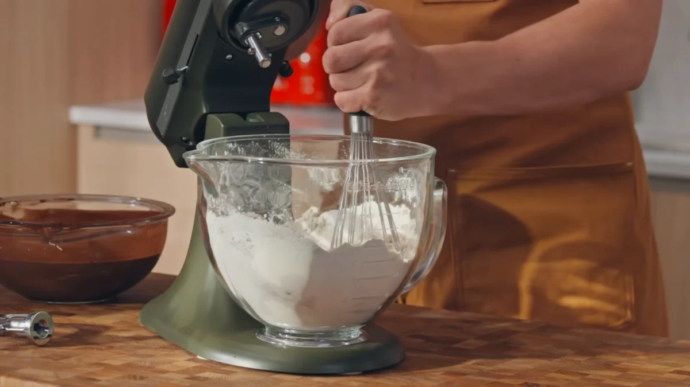
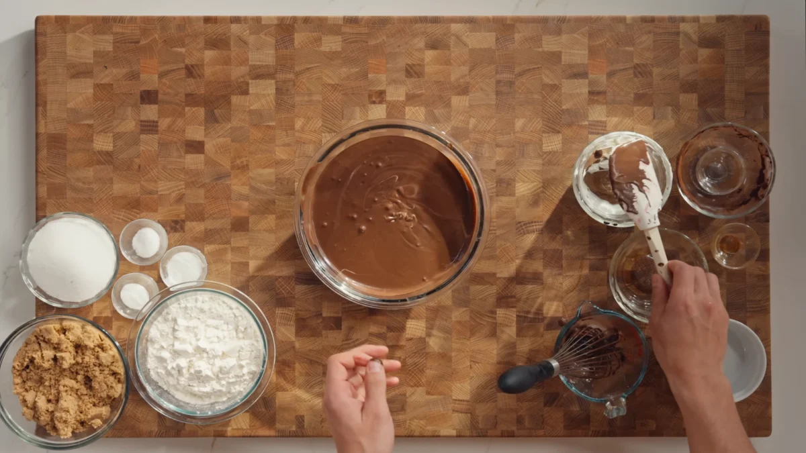
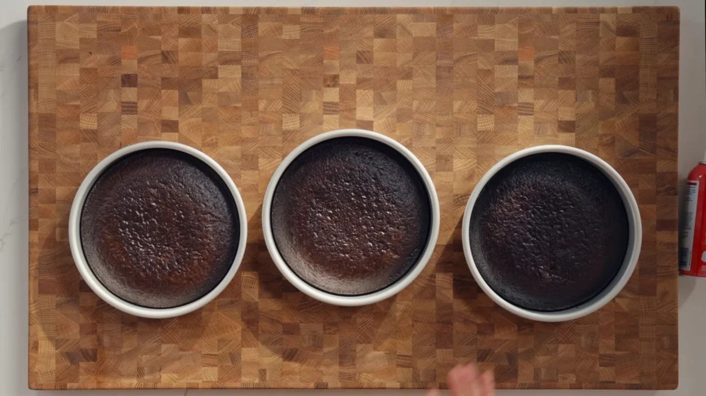
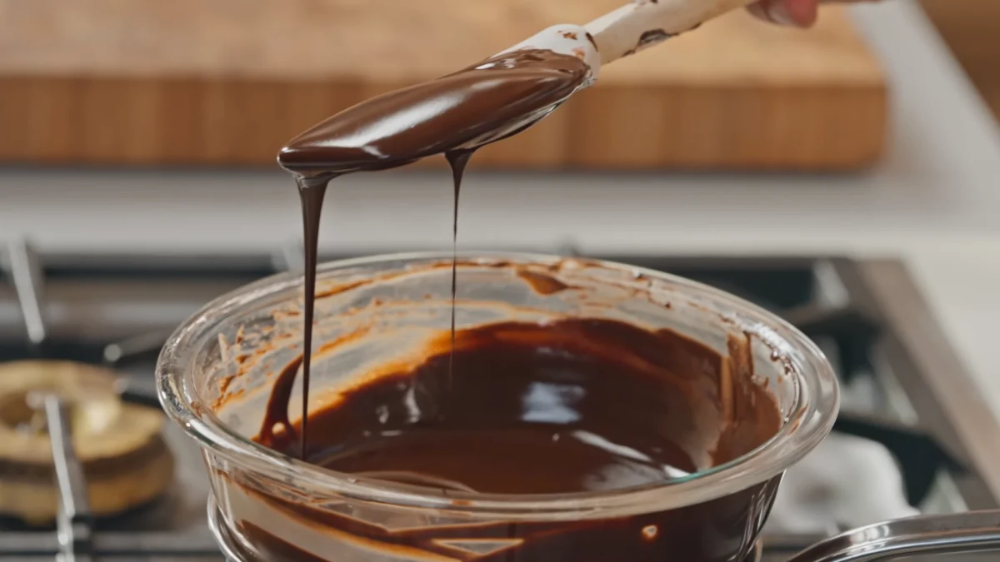
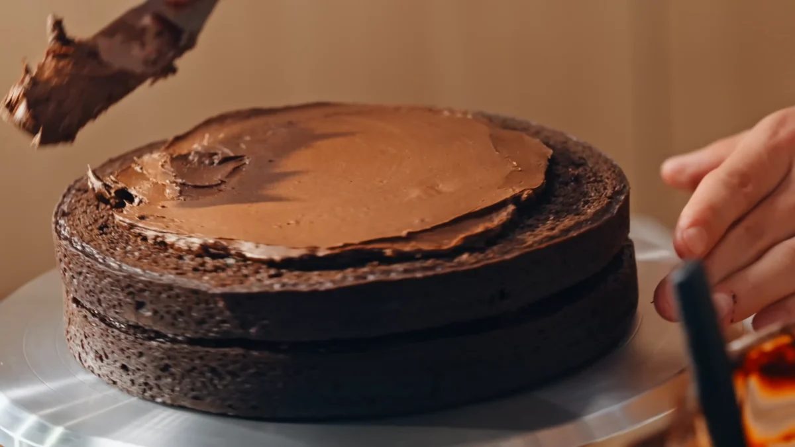
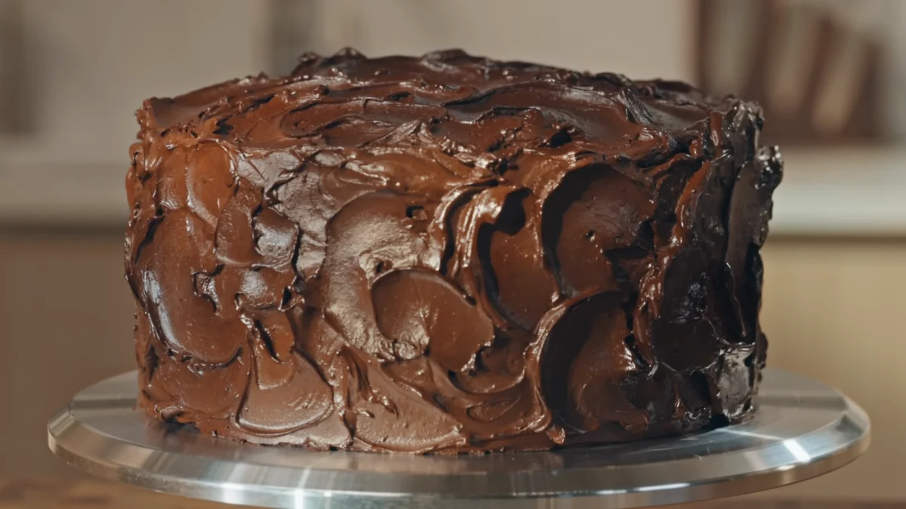

Chocolate layer cake is a rich, indulgent dessert made with multiple soft, moist chocolate sponge layers stacked together with a smooth, creamy chocolate frosting. It delivers a deep cocoa flavor with a soft, bakery-style texture that melts in every bite.
The cake batter is built using a combination of flour, sugar, cocoa powder, eggs, oil, and leavening agents, creating a light yet moist crumb. A key step is blooming cocoa powder with hot liquid, which intensifies the chocolate flavor and gives the cake its signature richness.
To enhance depth, espresso powder is added to the batter, which does not make the cake taste like coffee but instead strengthens the chocolate flavor. Sour cream and oil keep the cake soft, tender, and moist even after cooling.
The frosting is a silky chocolate fudge mixture made by combining melted chocolate, butter, cocoa powder, and powdered sugar with heavy cream. This creates a smooth, rich frosting that spreads easily between layers and holds the cake together.
Each layer of cake is carefully stacked with frosting in between, creating height and structure. The sides are coated evenly to lock in moisture and give the cake a clean, bakery-style finish.
Once assembled, the cake is chilled so the frosting sets properly, making it easier to slice. The final result is a dense, moist, and deeply chocolatey layer cake that is perfect for celebrations or any special occasion.
Preheat the oven and prepare cake pans with parchment paper. Whisk together the dry ingredients including flour, sugar, cocoa powder, leaveners, and salt. In a separate bowl, mix wet ingredients and combine everything into a smooth batter.

Mix cocoa powder and espresso powder with hot liquid to deepen the chocolate flavor. Add this mixture into the batter and stir until fully combined and smooth.

Divide the batter evenly into prepared pans and bake until a toothpick inserted in the center comes out clean. Allow the cakes to cool slightly before transferring them to a wire rack.

Melt chocolate with heavy cream and honey until smooth. In a separate bowl, beat butter, powdered sugar, and cocoa powder, then combine with the chocolate mixture until creamy and spreadable.

Level the cake layers, then stack them with frosting between each layer. Cover the top and sides evenly with frosting for a smooth finish.

Refrigerate the assembled cake so the frosting sets. Slice and serve once fully chilled for clean layers and best texture.
